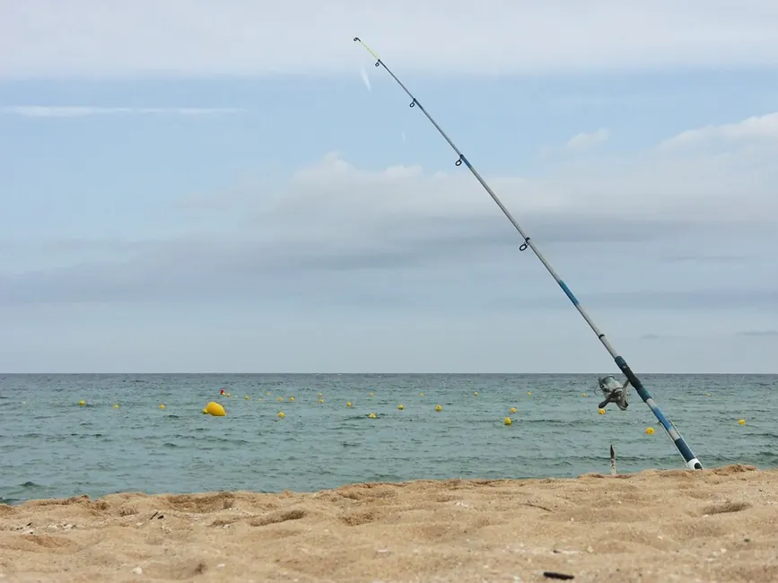
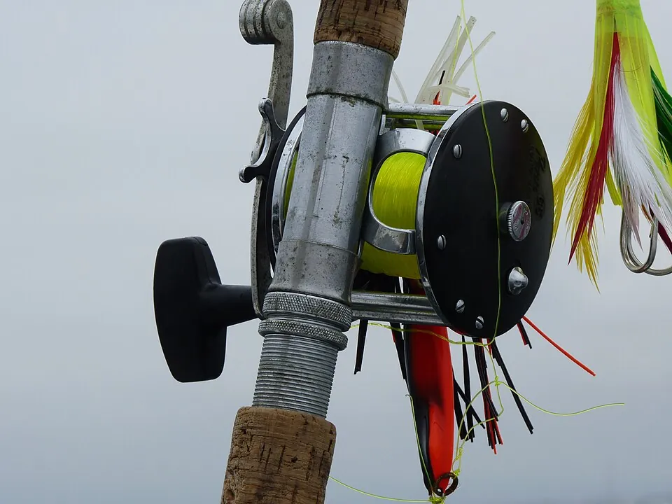
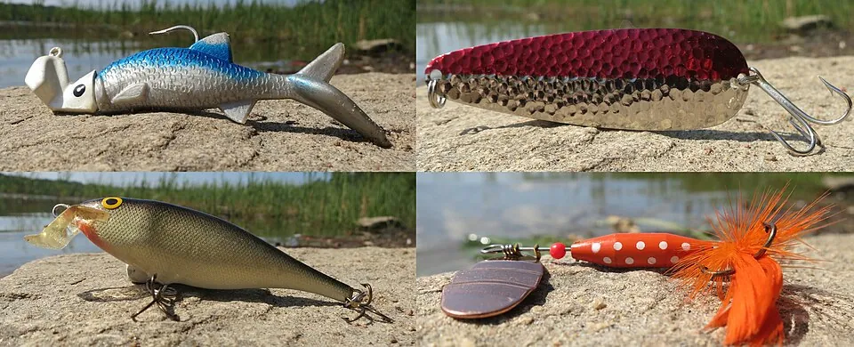
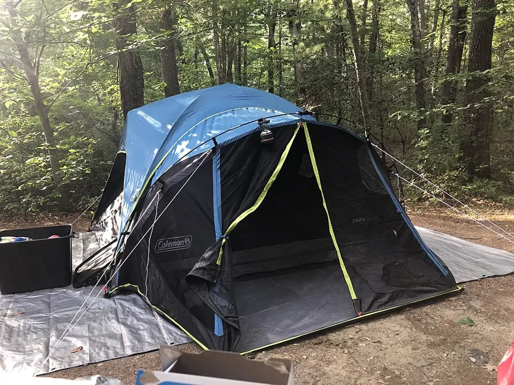
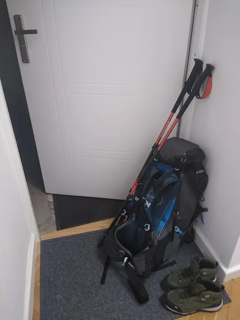
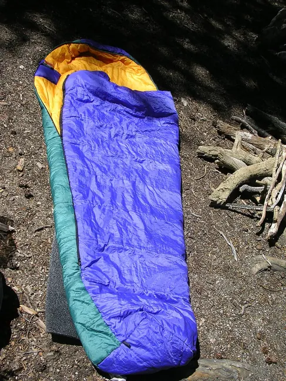

← Voltar à demoCréditos das fotografias
Fotos reais de referência do segmento, não dos produtos anunciados. Marca, itens e preços são fictícios. As versões abaixo foram redimensionadas e convertidas para WebP. Consulte a página original para informações completas de autoria e licença.

Vara de pesca na praia — Atarom, domínio público, Wikimedia Commons.
Molinete de pesca — CC0, Wikimedia Commons.
Iscas — R. Henrik Nilsson, origem, CC BY 4.0.
Barraca — Eden Aviv, CC0, Wikimedia Commons.
Mochila — SGrabarczuk (WMF), origem, CC BY-SA 4.0. Imagem adaptada para formato WebP; alterações nesta imagem seguem a mesma licença.
Saco de dormir — Smack, domínio público, Wikimedia Commons.
Fonte em formato JSON: fontes-commons.json.